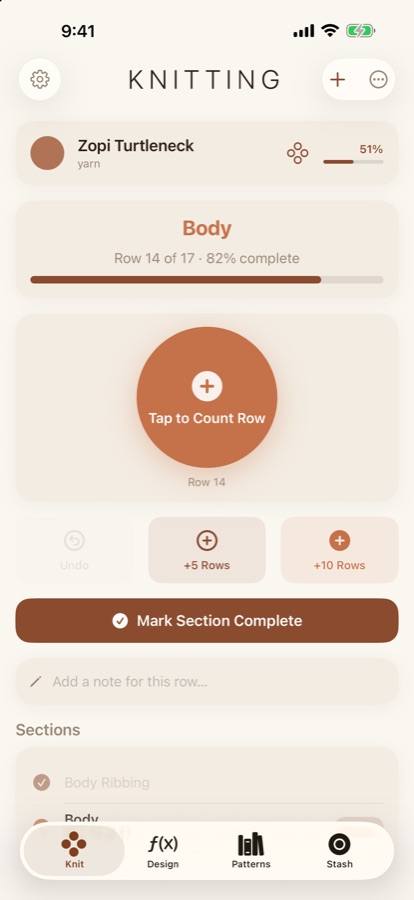
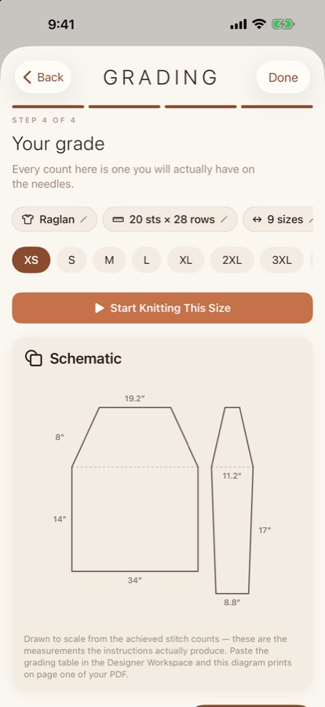
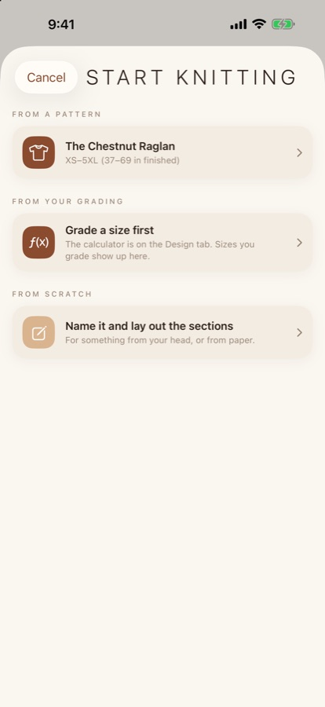
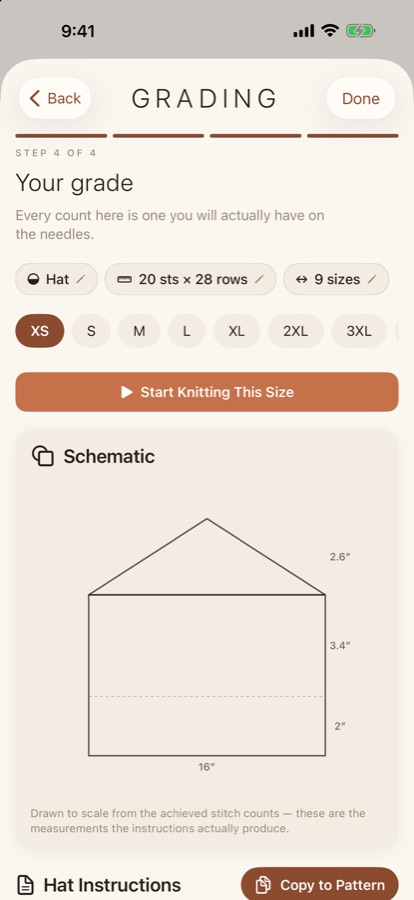
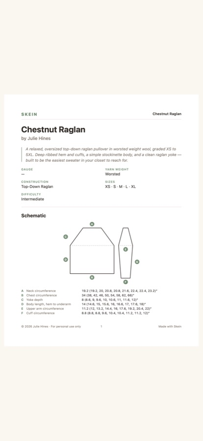
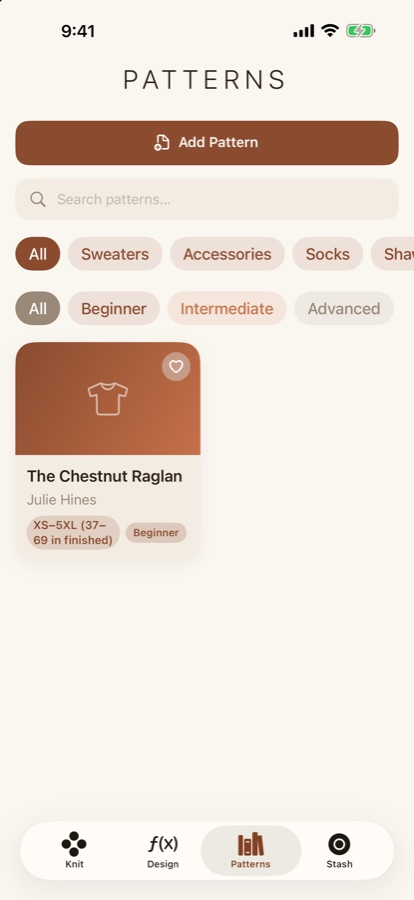
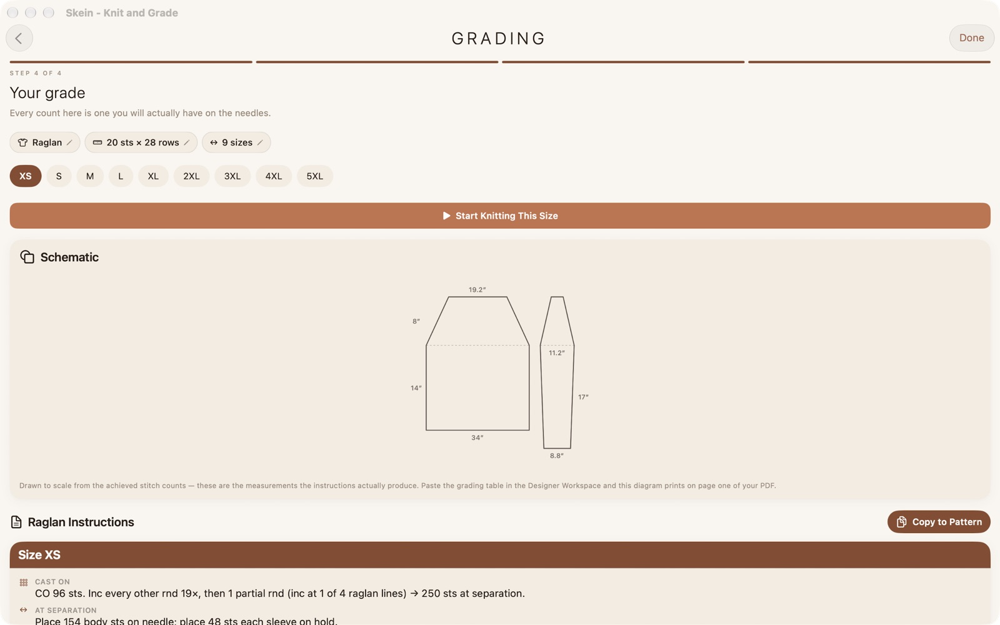
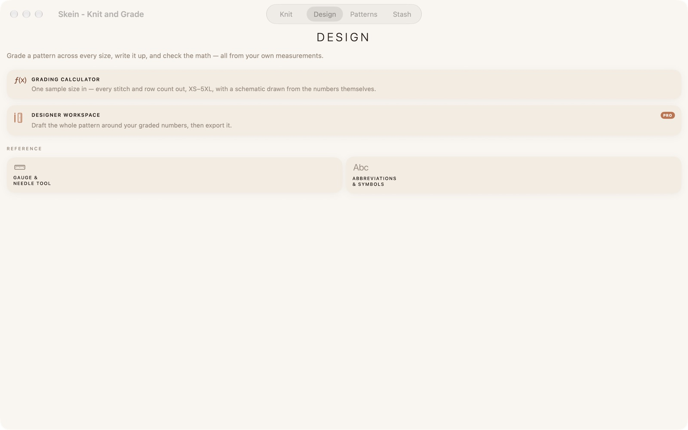
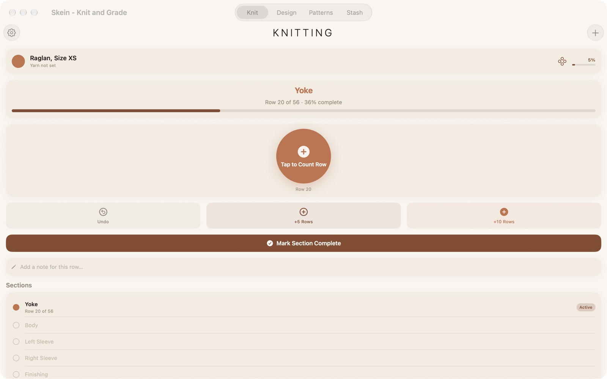

iPhone · iPad · Mac
Enter one sample size's gauge and measurements. Skein writes the stitch and row counts for all nine sizes, the shaping, the schematic and the pattern text, and checks its own math every time it opens.
Free to download. Designer Pro for every size, with a 7-day free trial.



For designers
Grading is the afternoon with the spreadsheet, and the place where one wrong stitch quietly ruins a size you will never knit yourself. Skein does the arithmetic, tells you when a size will not work, and writes the pattern the way a published one reads.
Gauge, neck, yoke depth, upper arm, cuff, sleeve. The numbers you already have from the swatch and the sweater on the table.
Raglan, circular yoke, set-in sleeve, drop shoulder, hat and sock, XS to 5XL, with per-size shaping rather than one number scaled up.
Instructions with the sizes in brackets, 96 (104, 112, 120) sts, a schematic drawn from the achieved counts, yardage per size, and a PDF to export.
Every count is a count you will have



For knitters, free
Native on Mac
One purchase covers iPhone, iPad and Mac. Grade at the desk, knit from the phone, and the Designer Workspace exports the finished PDF with the schematic and measurements on the last page, the way a published pattern reads.



Pricing
Stay in the loop
Centimetres, a yarn estimator and hands-free counting are in the works. Leave your email and I will tell you when they land. Nothing else, and never shared.
No spam, no list-selling, unsubscribe whenever.